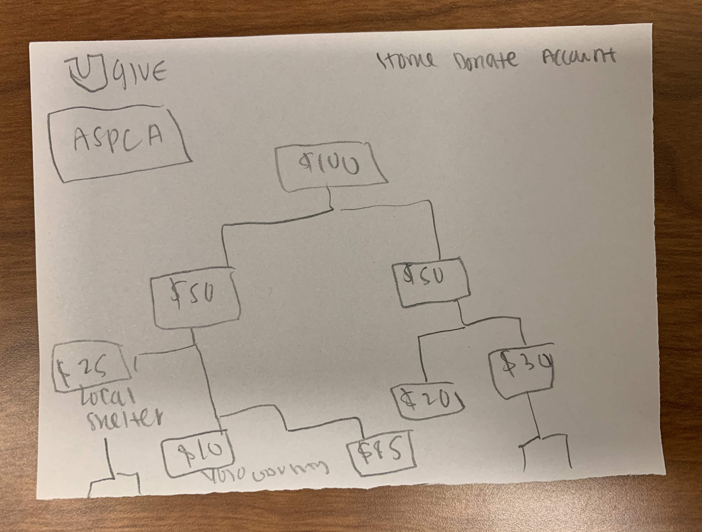
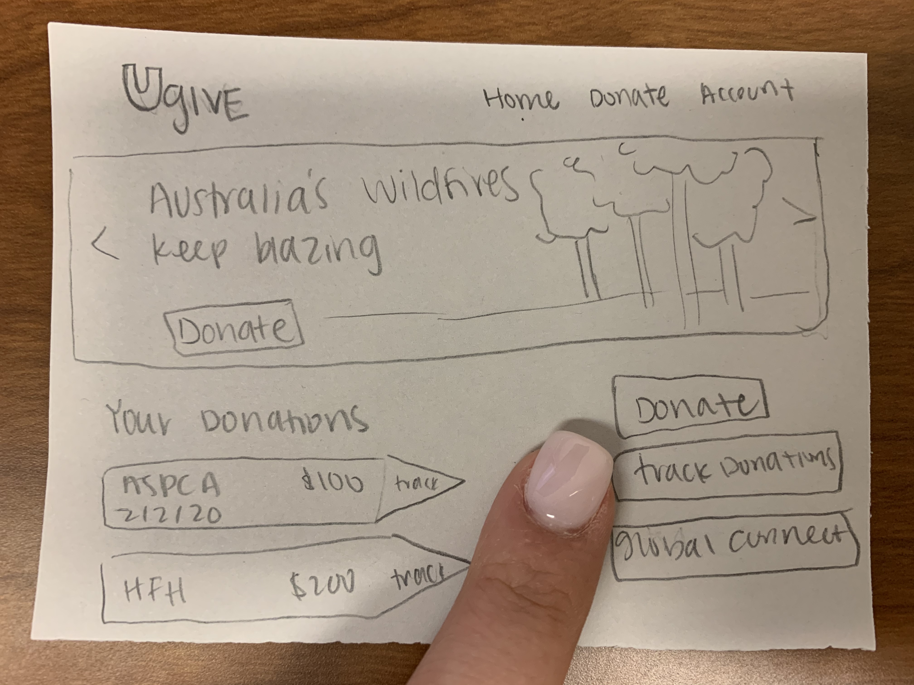
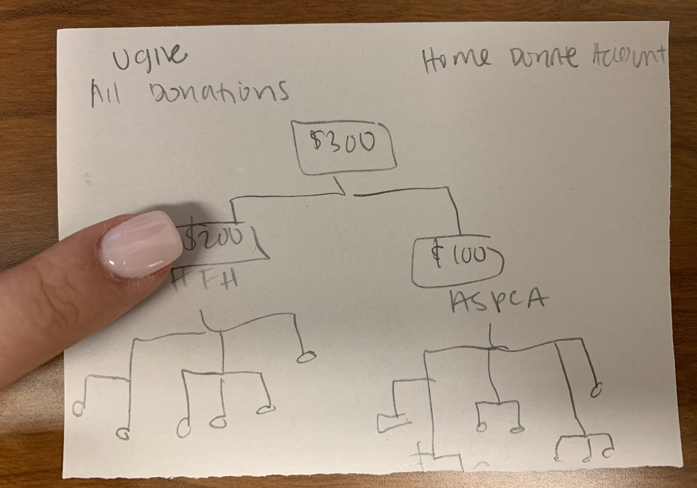
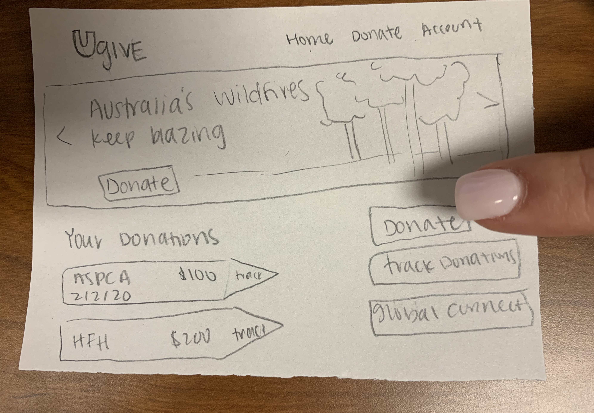
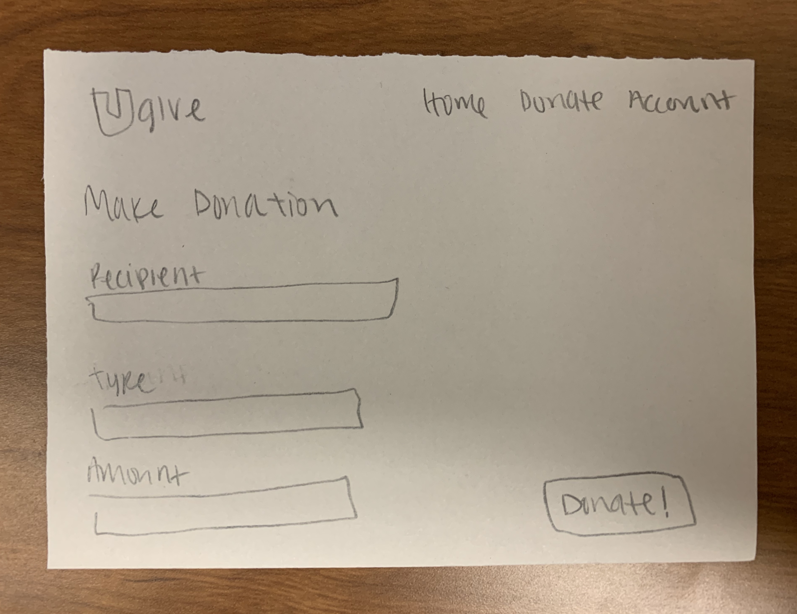
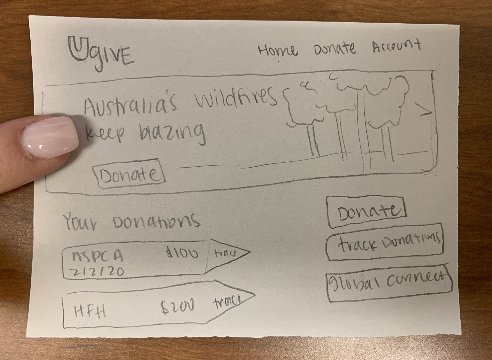
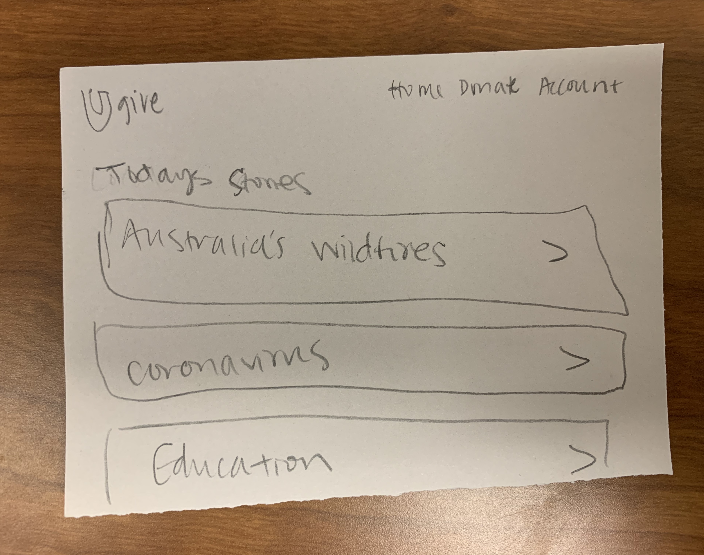

I want to create an interactive platform that helps people see how their donations make a difference in the lives of the recipients. I sketched out how that might look. I will get data from an organization and then focus on a single donor. The donor will have their own profile where they can see donations and a web that displays what happens to it over time. The site will be updated everytime a change is made. This platform will hopefully encourage donors to keep contributing, and inspire new people to begin.
One the home page, the user will have the option to view their donations, make a donation, see current events, and more. If the the viewer clicks on one of their donations they will be able to track it, as shown below.
On the home page, if the user clicks on the "track donations" button, then they will be able to see all of their donations in a single web.
 Another aspect of this website is to allow people to make additional donations. On the homepage there will be a button that says "Donate", if the user clicks on it then they will be taken to a donation page where they can select the recipient of their donation, the type of donation that they would like to make, and how much they want to donate (seen below).
 If the user would like to brush up on their current events, or the areas that would benifit from donation then they can click on the "current events" section on the home page (shown below).
 